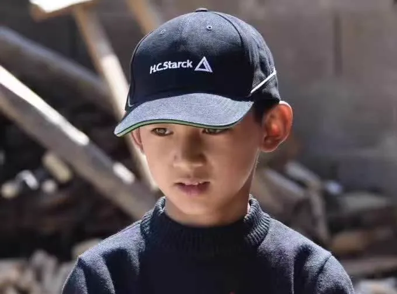
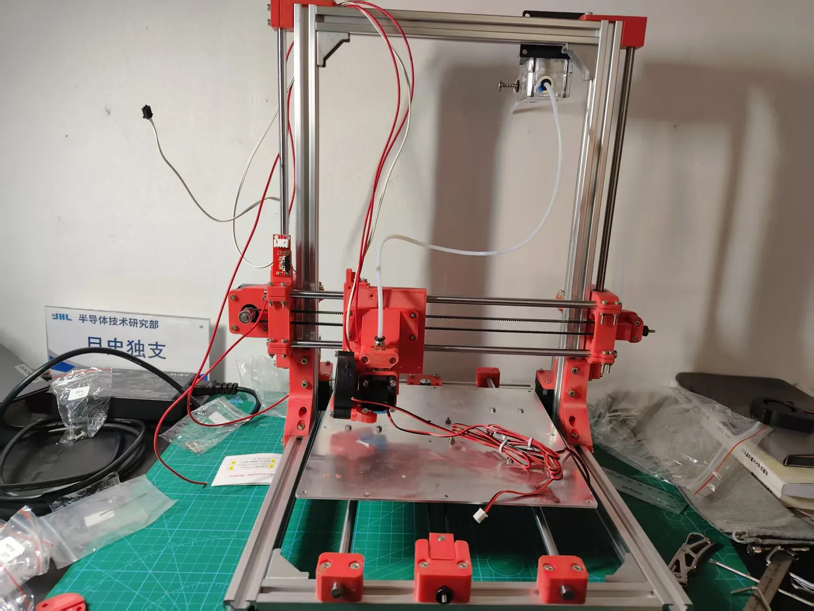
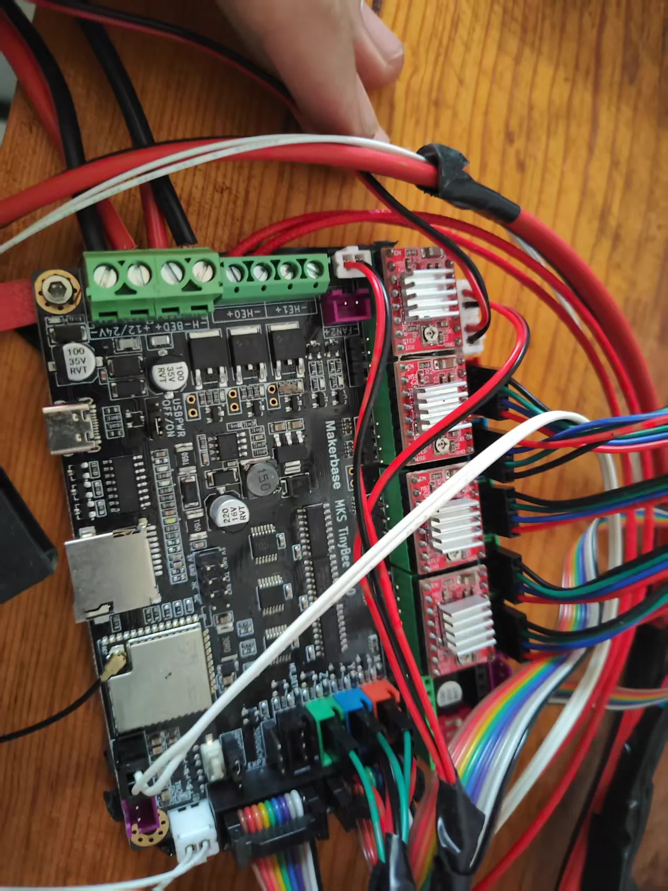
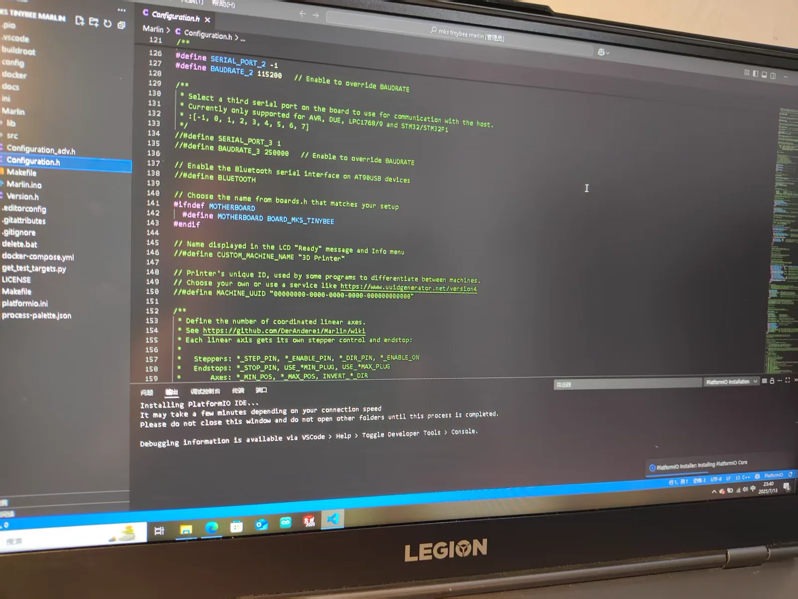
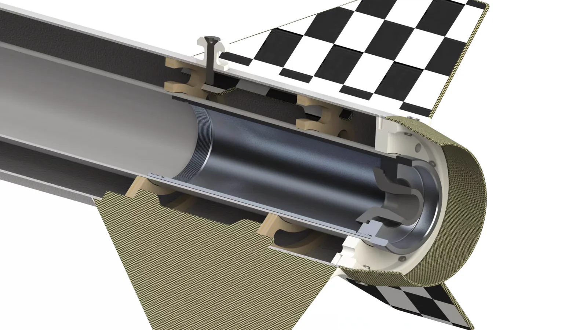
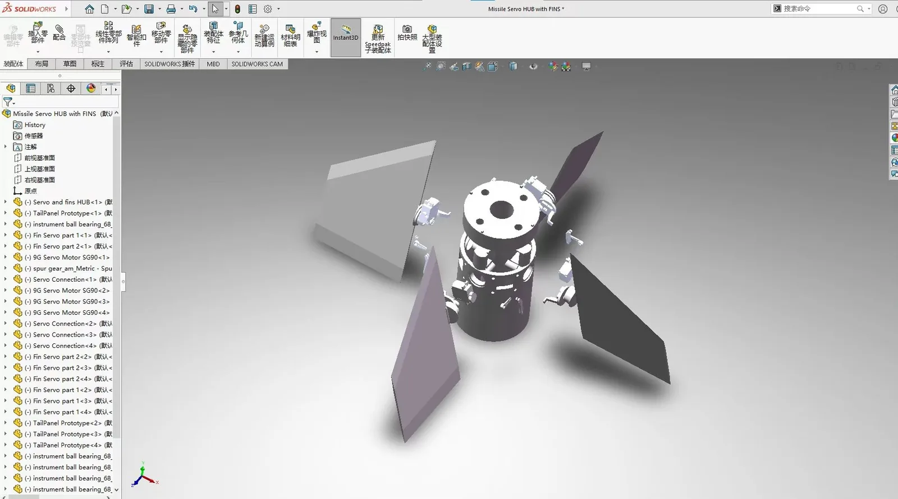
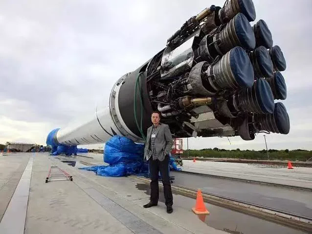
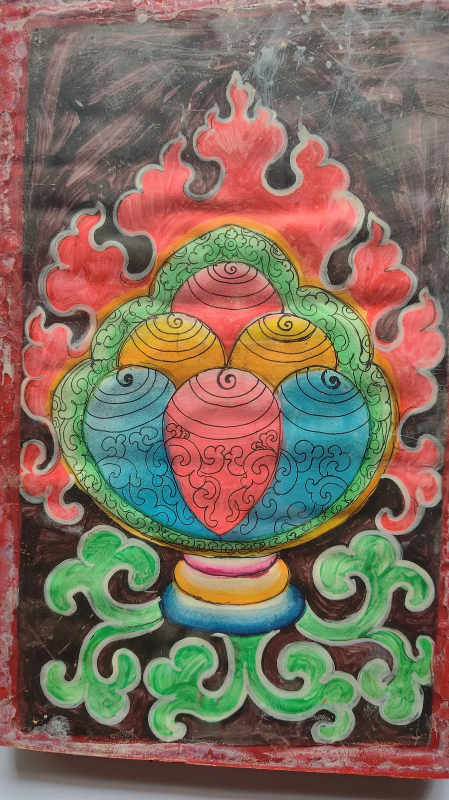
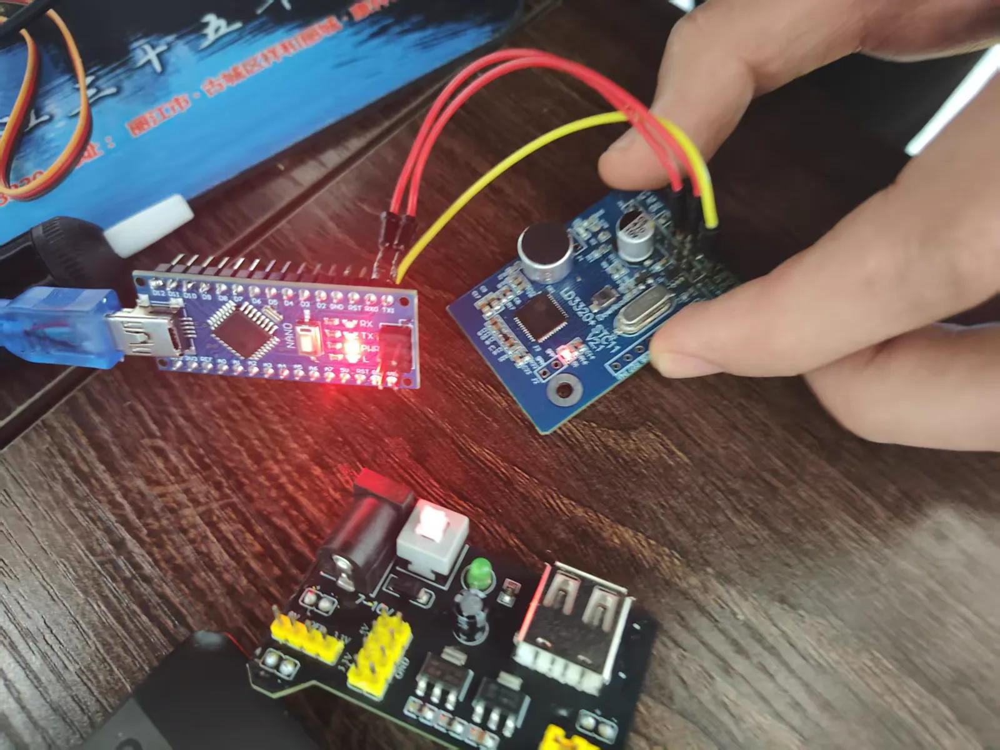
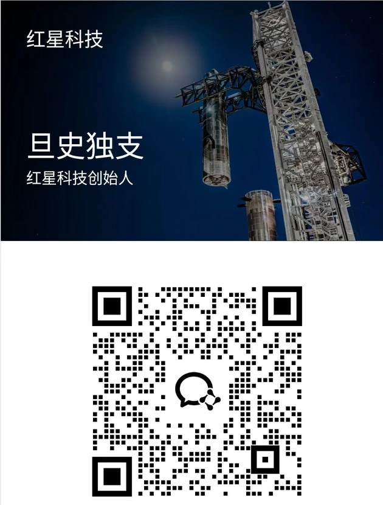

全国 AILD 超级工程师大赛
三等奖
01 ABOUT ME
我是旦史独支，也可以叫我 David。
我喜欢从零开始搭东西：买零件、装机器、调参数，也写一点工具，让 AI 参与实际工作。对我来说，一次动手、一次测试和一份能复盘的记录，比停在想法上更有意义。
从开源 3D 打印机到火箭实验，从自动化工具到文化与非遗的数字化，我正在把不同的兴趣连接成能落地的项目。

一张童年照片，留在个人经历的起点。
AILD 大赛纪念牌实拍。具体奖项与等级见下方记录。
三等奖
铜牌
二等奖
申请中 / 非已授权
先进制造方向 · 两周
一等奖
特等奖
继续积累，也继续实践
02 SELECTED WORK
实体制造、实验记录与数字工具。
这是我做过、也在继续做的事。



PROJECT 01 / OPEN-SOURCE HARDWARE
这是一台我自己手搓的开源 3D 打印机。从零件采购、安装、调平，到参数调整、测试和排错，整个过程都由我自己完成。
控制板接线、Marlin 固件配置和打印测试，都留下了过程实拍。让它能打印只是第一步，后续我还根据实际表现优化了打印头结构。

PROJECT 02 / EXPERIMENT
用 SolidWorks 做火箭结构建模，也进行实际实验与复盘。累计约 200 次大小实验，真实发射约 16–17 枚；逐渐学会把安全、预估和记录放在结果前面。



PROJECT 03 / CULTURE
尝试将地方纹样、器物和建筑元素转成 3D 模型与打印样本，用于展示、教学与文创探索。尊重文化语境，也确认素材的授权边界。
> configure · connect · iterate
工具链方向示意
PROJECT 04 / AI & AUTOMATION
配置 AI 编程工具、调用 API，尝试公众号小工具和小型自动化。比起只聊模型，更关心环境能否跑通、流程能否稳定工作。

PROJECT 05 / HARDWARE
用单片机连接语音模块，开发并测试声控设备。照片记录了实际接线与联调过程，也是我早期硬件实践的一部分。
03 FIELD DATA
统计区间
—
总量由本人提供；折线按总量示意，不代表逐日账本。近期视图保留前期累计值。
04 WORK TOGETHER
从一个模型，到一套能跑通的工具。
先聊需求，再确认方案与报价。
把草图、尺寸或想法转成模型，提供材料选择、修模、打印与小批量代打。
检查运行环境、配置依赖、接入 API 与工具，协助启动、调用和基础排错。
围绕展示模型、小装置和简单自动化，拆解需求，先验证关键问题。
将地方纹样、器物与建筑元素，转化为有语境、有用途的数字模型与文创原型。
参考、尺寸、用途与时间
可行性、材料与报价
确认关键尺寸与效果
成品、文件与迭代反馈
可以先判断。照片适合做外形参考；精确结构还需要尺寸、多角度照片或草图。已有 STL、STEP 或 3MF 文件，也可以只咨询代打。
主要包含环境检查、依赖配置、API 与常用工具接入、启动指导和基础排错。按系统、工具和实际工作量先确认报价；模型订阅或 API 用量费用需另行确认，不包含在安装指导费中。不要发送密码或 API 密钥，授权与登录由你本人完成。
说明用途、已有素材、期望结果、交付时间和预算。打印需求再补充尺寸、数量、材料与颜色；AI 工具需求补充电脑系统、工具名称和报错截图。涉及文化素材时，先说明背景与授权情况。
05 LET'S MAKE IT REAL

你好，我想咨询【3D 建模 / 代打 / AI Agent 安装 / 项目原型 / 文化设计】。用途是【填写】，已有素材是【填写】，期望交付时间是【填写】，预算范围是【填写】。想先确认可行性和需要准备的资料。
客户文件仅用于当前项目；作品展示前先确认许可，文化素材使用前先确认背景与授权。